Off-road autonomy
Planning with the whole vehicle in mind.
Vehicle-Conditioned Terrain Planning evaluates how heading, body geometry, wheel contacts, and surface conditions change which routes are feasible and useful for a full-scale ground robot.
Robotics researcher
I’m Akshay Naik, a PhD candidate at the University of Illinois Urbana-Champaign. I develop planning, localization, and navigation methods for robots operating off-road and underwater—then integrate and test them on physical systems.
01 / Selected work
My research connects environment models, sensing, estimation, and planning with experiments on ground and underwater platforms.
Off-road autonomy
Vehicle-Conditioned Terrain Planning evaluates how heading, body geometry, wheel contacts, and surface conditions change which routes are feasible and useful for a full-scale ground robot.

Underwater autonomy
A situation-triggered filter adapts its noise model across motion conditions while preserving one continuous state estimate—designed and evaluated for BlueROV2 dead reckoning.
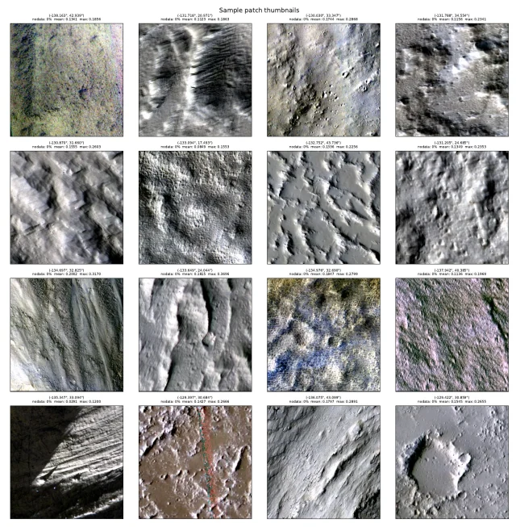
Planetary imagery
Self-supervised and multimodal representations for high-resolution Mars imagery, built to learn from large scientific datasets where geological labels are sparse.
View the project02 / About
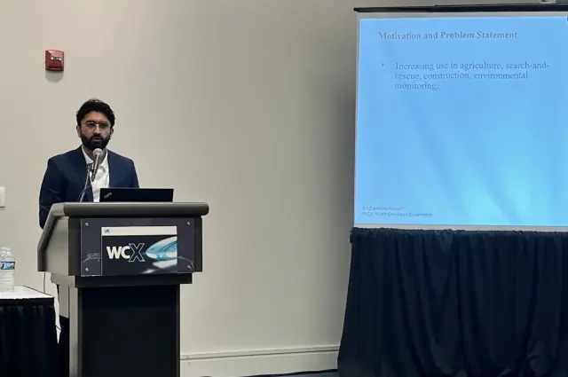
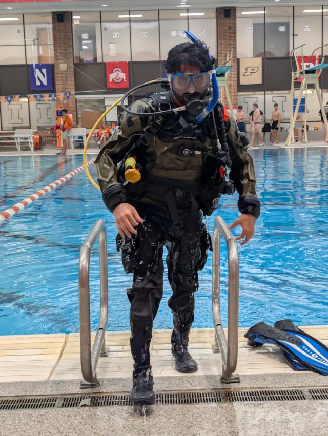
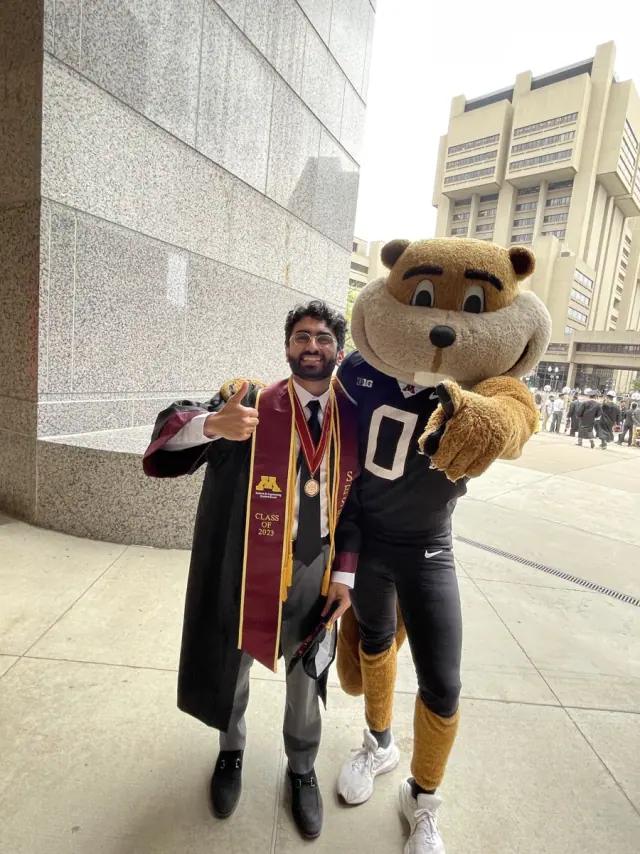
I’m a PhD candidate in Computer Engineering at UIUC, advised by Prof. R. S. Sreenivas. My work spans algorithm development, sensor and software integration, simulation, and evaluation on physical robotic platforms.
Across ground and underwater systems, I’m interested in what happens when standard assumptions break: terrain changes beneath a vehicle, sensing quality shifts during a maneuver, or external positioning disappears. I develop methods that respond to those conditions while remaining practical to integrate and test.
Before my doctoral work, I worked on AI and physical-system modeling at Lockheed Martin Space, detector electronics with the CERN CMS collaboration at the University of Minnesota, and research at MIT Haystack Observatory supporting MOXIE. I earned my bachelor’s degree in Computer Engineering with Honors and a minor in Statistics from Minnesota.
My interest in underwater environments extends beyond robots: I’m also a certified scuba diver. Away from the lab, I love cooking and exploring new cuisines.
I coordinate implementation, integration, experiments, and student research across complete autonomy systems.
I’m interested in how robotics research becomes useful products and how deep-tech teams make sound technical decisions.
I’ve taught safe autonomy and introductory electronics, and co-chair the ECE Graduate Student Advisory Committee.
03 / Experience
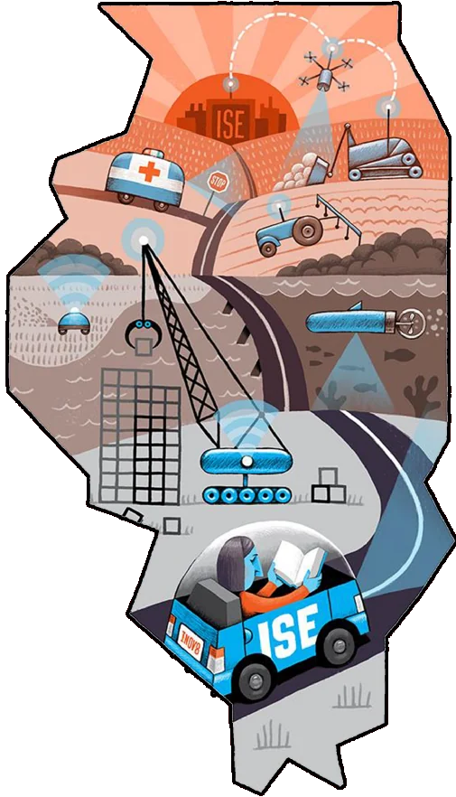
I lead development and integration for ground and underwater platforms, connecting sensing, state estimation, mapping, and planning. My work includes full-scale R-Gator autonomy, BlueROV2 experiments, and coordinating software integration and field testing.
I also help scope student research, review technical approaches, and co-authored a successful proposal that secured $50,000 for the lab’s underwater-autonomy research.
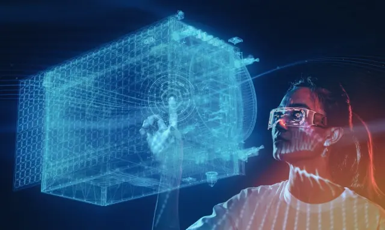
Across two internships, I applied graph neural networks to heat-transfer modeling and digital-twin/Kalman-filter methods to aerospace state estimation. I worked across engineering teams to translate physical-system behavior into data-driven models.
The image illustrates digital engineering for the LM 400 satellite program. The linked articles provide context for the broader space and digital-twin work.
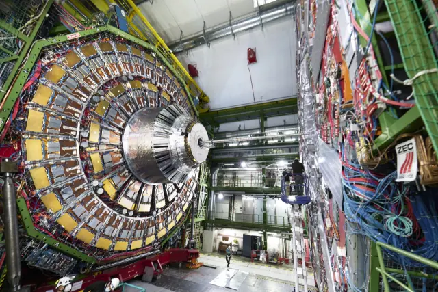
At the University of Minnesota, I characterized a precision tunable time-delay circuit for future detector instrumentation. I built FPGA/VHDL test workflows and developed temperature-dependent timing correction, contributing to an honors thesis and TWEPP 2023 work.
The photograph shows the wider CMS experiment at CERN.
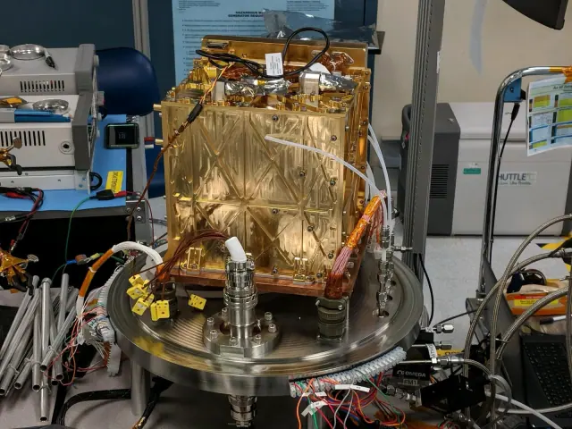
As an NSF REU researcher at MIT Haystack Observatory, I contributed to research supporting MOXIE, the oxygen-production instrument aboard NASA’s Perseverance rover.
The image shows a MOXIE engineering model before vibration testing at JPL.
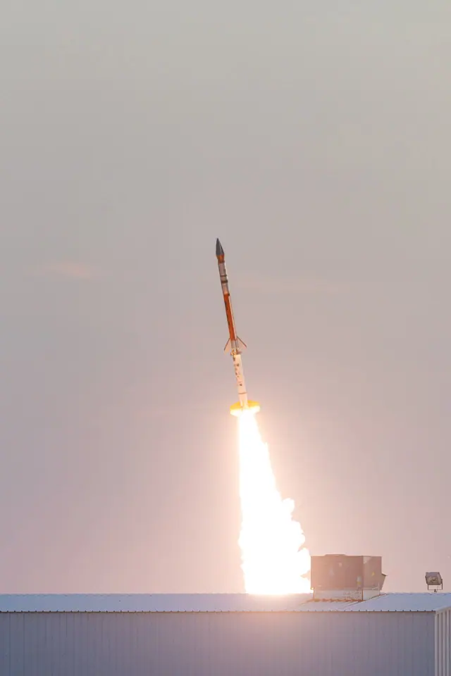
I designed printed circuit boards and configured electronics for high-altitude balloon experiments measuring stratospheric particulates relevant to hypersonic boundary-layer transition.
The linked AFRL article describes related hypersonics research at NASA Wallops.
04 / Publications
Status and authorship shown from current manuscript records.
Akshay Naik, Ramavarapu S. Sreenivas, Dustin Nottage, Ahmet Soylemezoglu
Akshay Naik et al.
First author and presenter.
Akshay Naik, Marius F. R. Juston, Jay Mahajan
05 / From my kitchen
I love cooking across Asian, Hispanic, Indian, and Italian cuisines. Everything I make is lactovegetarian, and I’m always looking for a new dish, technique, or cuisine to explore.
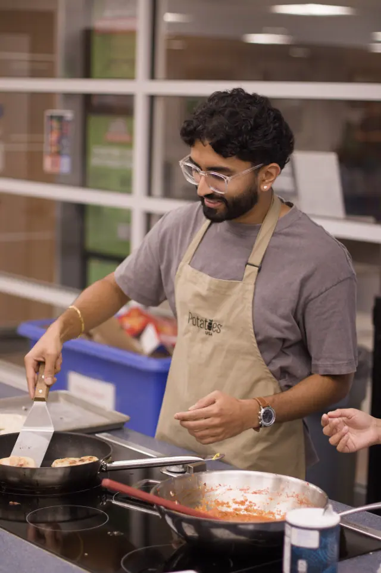
From paneer and samosas to noodles, pupusas, and pasta. A few things I’ve been making lately.
Take a look around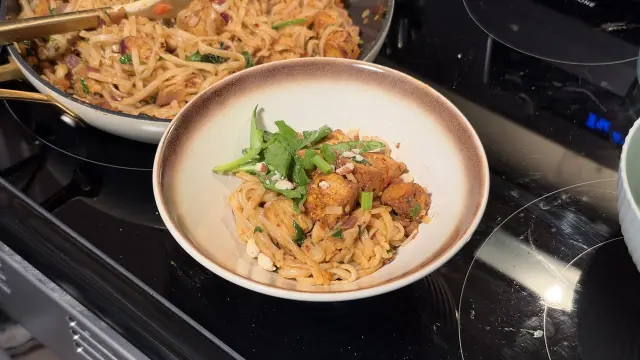
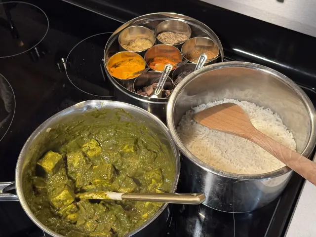
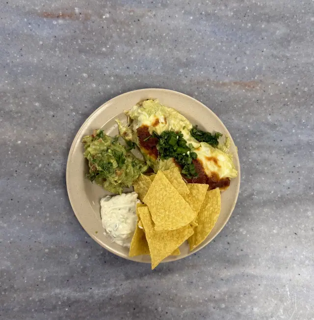
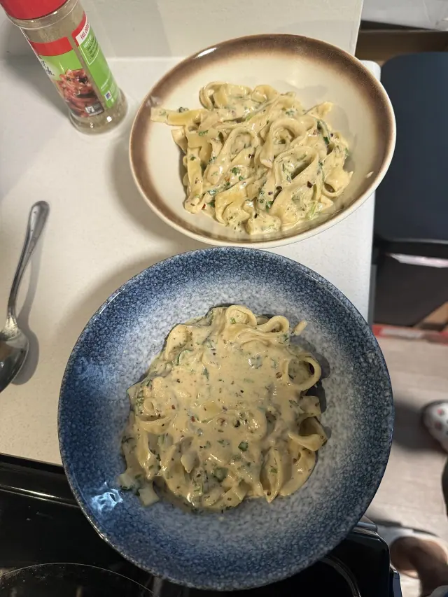
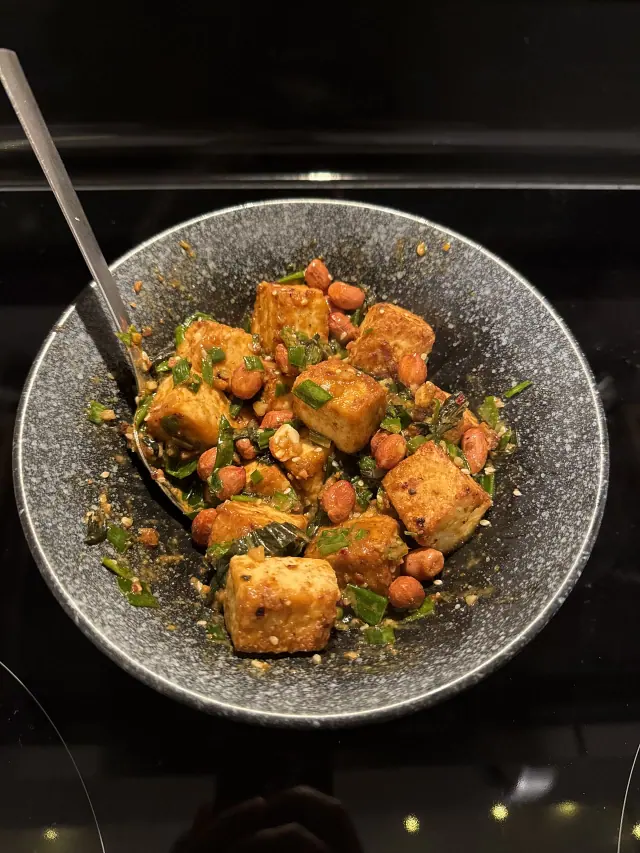
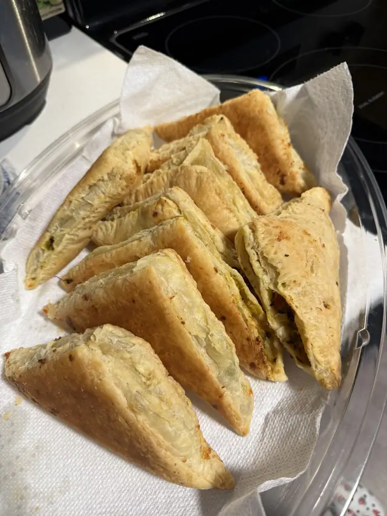
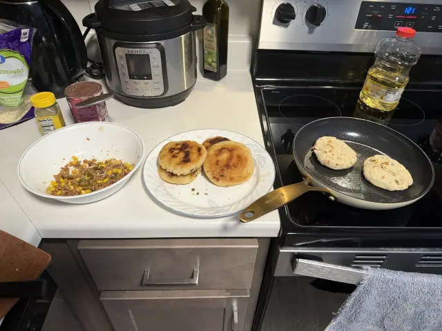
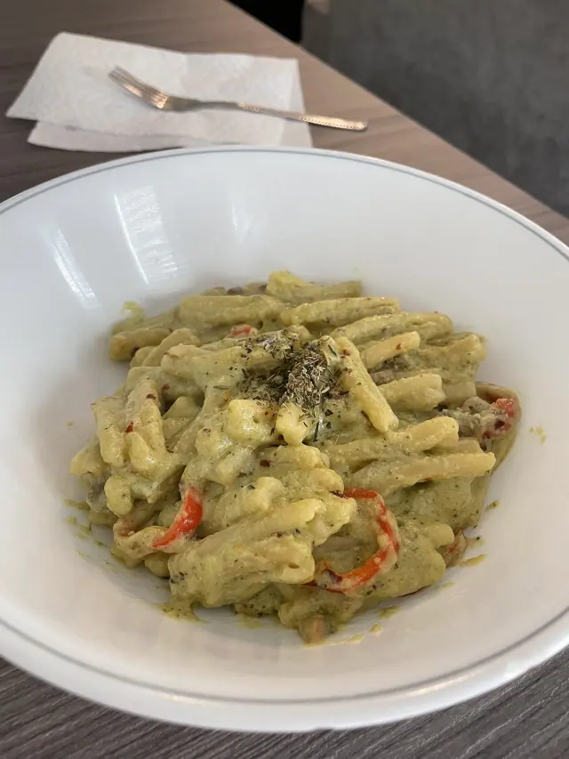
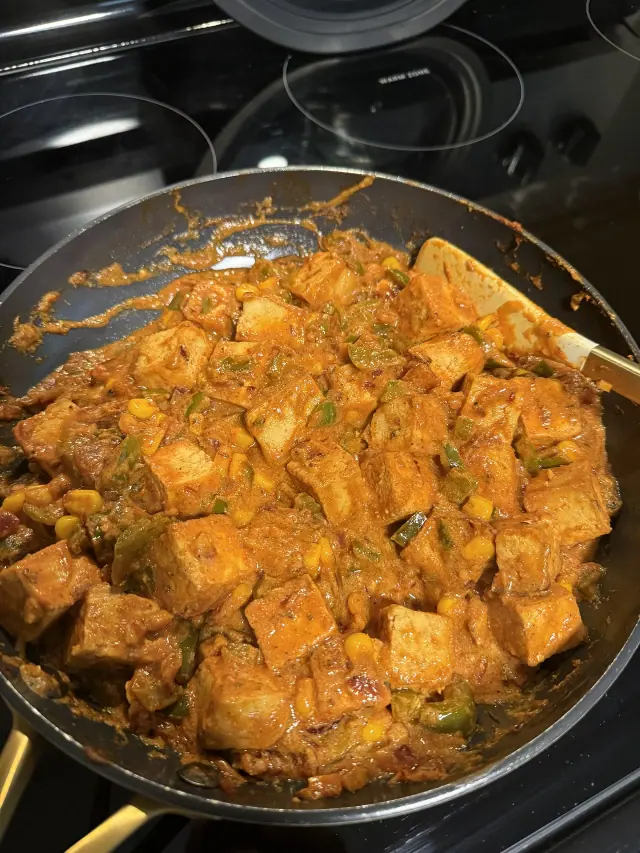
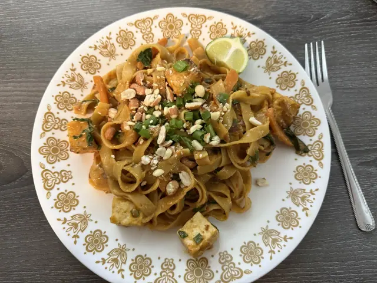
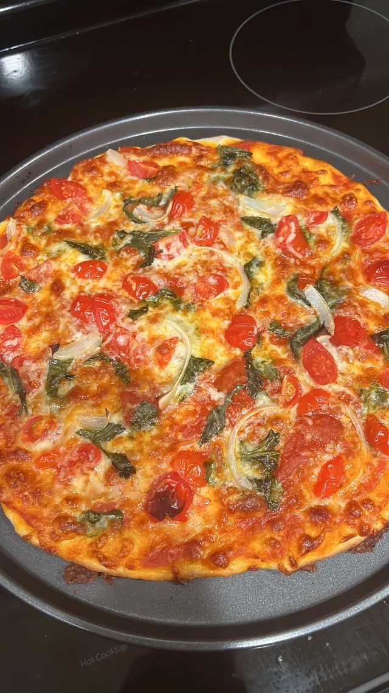
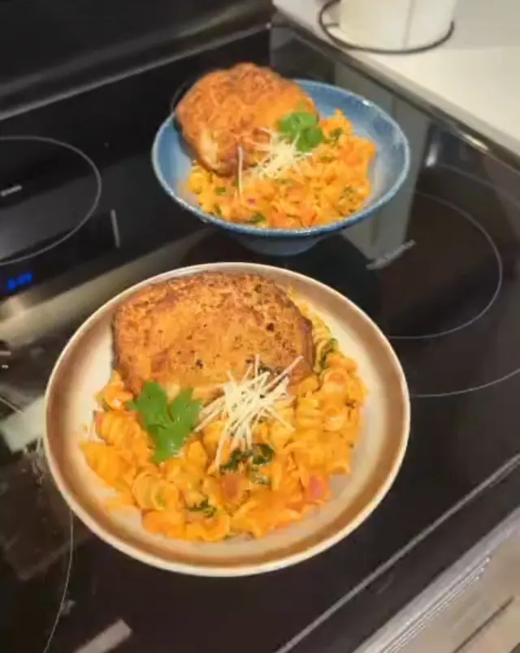
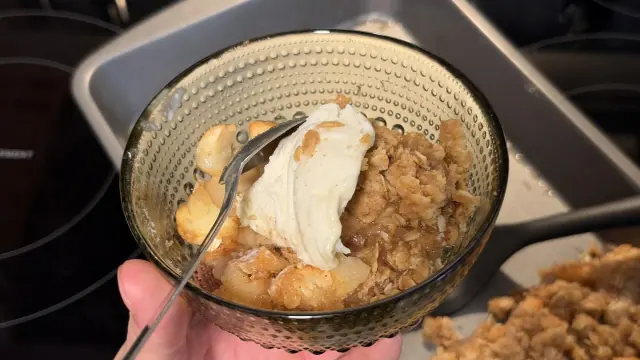
I’m always glad to hear from researchers and engineers working on autonomy, field robotics, and deep-tech systems.